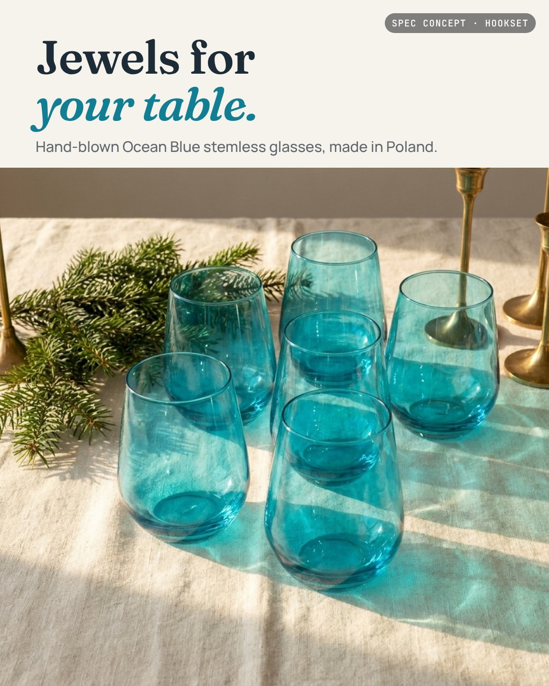
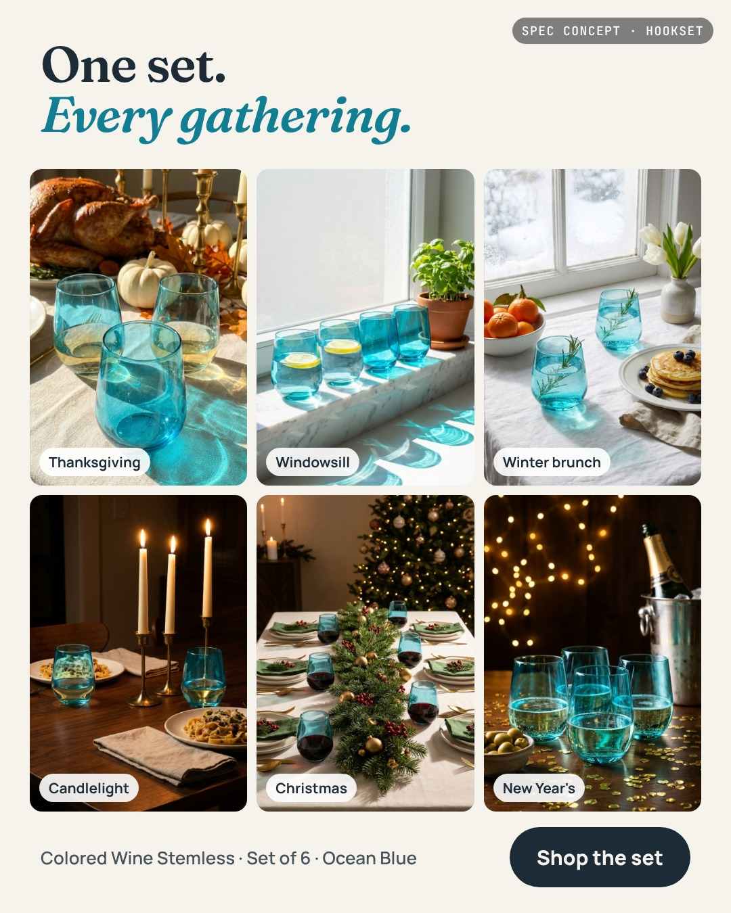
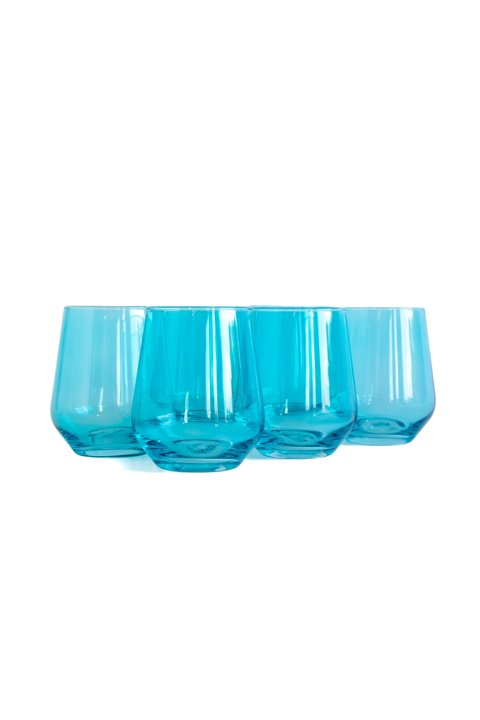
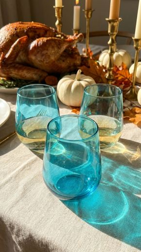
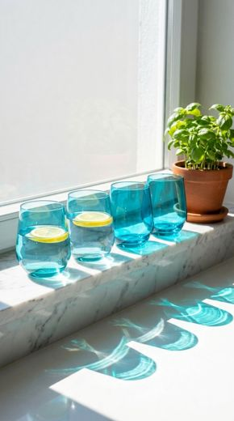
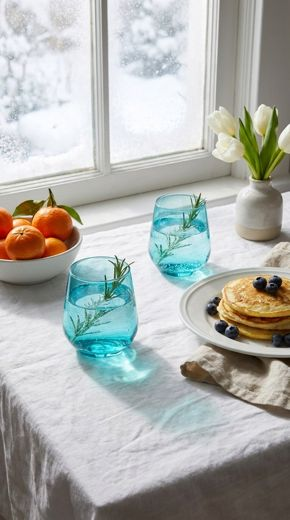
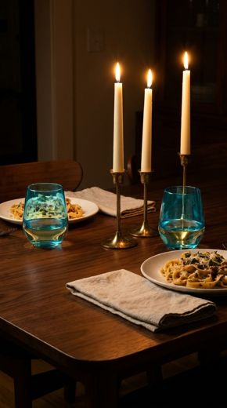
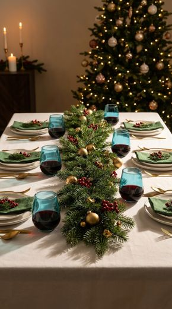
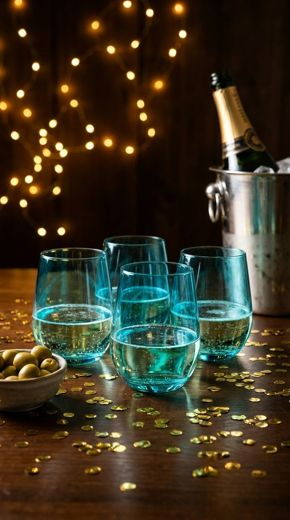
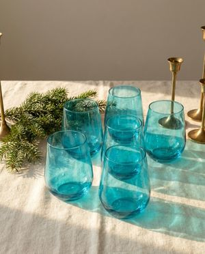

Your holiday ads come from one Christmas shoot. So we took the Ocean Blue stemless set through six different occasions: Thanksgiving, a sunny Sunday, winter brunch, dinner for two, Christmas and New Year's. In one, white wine pours in and the sun throws turquoise light across the tablecloth. We cut it into a 13-second Reel with an original track.
The ads we sampled (all 11 active in the Ad Library on Nov 14, every one started between Nov 2 and 12) mostly come from one holiday shoot: a decorated Christmas table, a wall of colored glass, and you on camera in several. One is a carousel of single colors on white. All of them are Christmas. What colored glass does best, changing with the light and the occasion, doesn't get shown. That is the angle here: one set, six different moments, with the light moving through the glass.



Your photo: the reference
Every scene was compared at full size against your product photo on these points before it was used:
7 scenes checked, 7 passed. Three scenes (winter brunch, New Year's and this page's hero shot) were regenerated because the glass color came out too pale. A clip of hands clinking glasses was dropped because the hands blended into the glass. Each moving clip was checked at 7 points across the clip so the product keeps its shape. Checked by Hookset on Nov 16, 2026.







We started from one of your own product photos of the Colored Wine Stemless set in Ocean Blue. We never invent the product.
Each new setting is generated around that photo and checked against the real product before it's used.
Approved stills are animated with the camera locked so the product stays put, then cut to an original music track.
The $150 trial: 10 ads for one product, including a Reel like this one, delivered in 3 business days. If none are usable, you get a full refund.
Spec concept made by Hookset Creative from Estelle Colored Glass's public product photos and real public reviews/claims. Not affiliated with or endorsed by Estelle Colored Glass. Shared privately; these ads are yours to run.